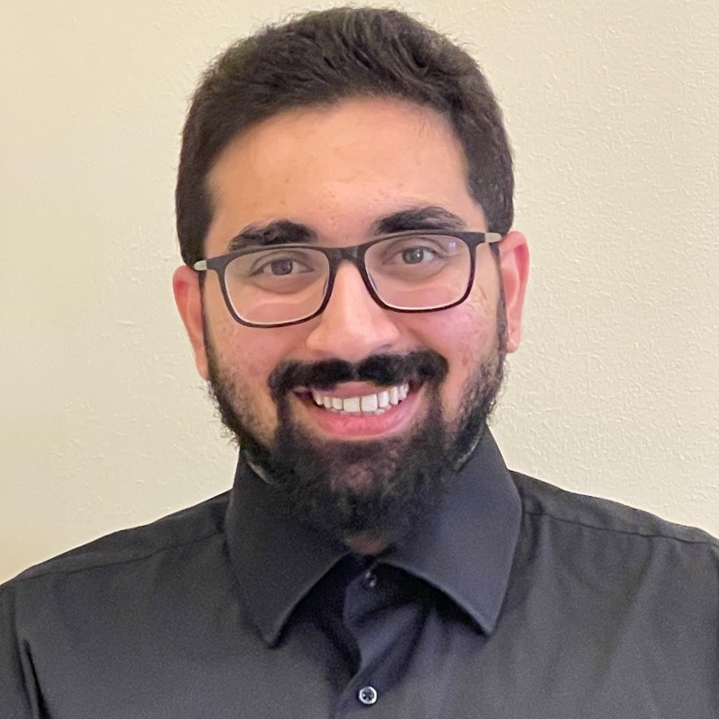

I am a senior data engineer at the King Abdullah Petroleum Studies and Research Center (KAPSARC).
Previously, I was a postdoctoral researcher in the Extreme Computing Research Center at the King Abdullah University of Science and Technology (KAUST), where I worked with David E. Keyes on developing scalable algorithms exploiting data sparsity in dense matrices to bridge between architectures that are increasingly memory-austere on a per-core basis and extreme-scale scientific applications.
Prior to that, I was a postdoctoral researcher in the Innovative Computing Laboratory at the University of Tennessee, Knoxville, where I worked with Jack Dongarra on developing algorithms for dense linear algebra on distributed, GPU-accelerated systems. I was part of the world's leading Exascale Computing Project of the United States Department of Energy: Software for Linear Algebra Targeting Exascale (SLATE).
Before that, I was a software engineer at Saudi Electricity Company and Saudi Aramco.